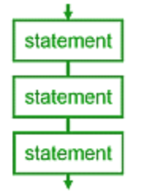
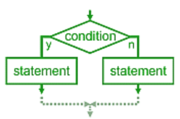

Control flow#
Condition operator, if, elif, else#
x = 30
if x % 10 == 0: # semicolon emphasizes the beginning of еру new code block
# indentation is important!
print(x, "Divisible by 10")
elif x % 5 == 0:
print(x, "Divisible by 5")
else:
print(x, "Not divisible by 5")
30 Divisible by 10
value = float("nan")
if value > 5:
print('> 5')
elif value == 5:
print('5')
elif value < 5:
print('< 5')
else:
print('HOW?!') # Q: for which value "HOW?!" will be printed?
HOW?!
if (x % 10 == 0): # unnecessary brackets impede reading of this code
print(x, "Divisible by 10")
elif (x % 5 == 0):
print(x, "Divisible by 5")
else:
print(x, "Not divisible by 5")
30 Divisible by 10
Ternary operator#
if x % 10 == 0:
answer = "Divisible by 10"
else:
answer = "Not divisible by 10"
answer = "Divisible by 10" if x % 10 == 0 else "Not divisible by 10"
x = 13
answer = x % 10 if x > 0 else "Wrong value!"
Execsice -1. Write a function, which returns the middle of three given integers.
def get_middle_value(a: int, b: int, c: int) -> int:
"""
Takes three values and returns middle value.
"""
if a <= b <= c or c <= b <= a:
return b
elif b <= a <= c or c <= a <= b:
return a
else:
return c
assert get_middle_value(1, 2, 3) == 2
assert get_middle_value(1, 3, 2) == 2
assert get_middle_value(2, 1, 3) == 2
assert get_middle_value(2, 3, 1) == 2
assert get_middle_value(3, 1, 2) == 2
assert get_middle_value(3, 2, 1) == 2
assert get_middle_value(-100, -10, 100) == -10
assert get_middle_value(100, -100, -10) == -10
assert get_middle_value(-10, -10, -5) == -10
assert get_middle_value(-10, -10, -10) == -10
assert get_middle_value(-100, 10, 100) == 10
assert get_middle_value(0, 0, 0) == 0
assert get_middle_value(10**12, -10**12, 10**10) == 10**10
or, and#
bool(20), bool(0)
(True, False)
bool(20 or 0), bool(20 and 0)
(True, False)
type(20 or 0), type(20 and 0)
(int, int)
x = ""
if x:
pass # pass just does nothing
else:
x = "default"
x
'default'
x = ""
x = x or "default" # often pattern to substitute empty value
x
Lazy evaluation#
#Q: what will happen?
print(0 and NEVER_EXISTED_VARIABLE)
print([10] or NEVER_EXISTED_VARIABLE)
0
[10]
print(10 and NEVER_EXISTED_VARIABLE)
---------------------------------------------------------------------------
NameError Traceback (most recent call last)
Input In [173], in <cell line: 1>()
----> 1 print(10 and NEVER_EXISTED_VARIABLE)
NameError: name 'NEVER_EXISTED_VARIABLE' is not defined
10 or print("lazy")
10
print("start") or print("end")
start
end
print("start")
start
None#
# None means the value is missing
None
type(_) # sic! None is not stored to _ (because "value is missing")
# so _ contains one of previous values
type
type(None)
NoneType
bool(None), str(None)
(False, 'None')
None usage#
# Turning video on...
is_working = False # something is broken
if is_working:
channel = 'Megasuper Channel'
else:
channel = None
value = print("I am print!") # print just prints objects, and returns None
print("value", "=", value)
I am print!
value = None
# print size of value, if value is not None
value = None
# value = "Football"
# value = ""
# Newbie
if value != None: # works for basic types, but
# nonstandard objects could equal None,
# not beeing None
print(len(value))
# Newbie 2
if value: # empty list coerced to False
print(len(value))
# Expert
if value is not None: # is checks if value is the same object
print(len(value))
Loops: for#
# print numbers from 1 to 10
print(1)
print(2)
print(3)
print(4)
print(5)
print(6)
print(7)
print(8)
print(9)
print(10)
1
2
3
4
5
6
7
8
9
10
for n in [1, 2, 3, 4, 5, 6, 7, 8, 9, 10]:
print(n)
1
2
3
4
5
6
7
8
9
10
for letter in "ABCDE":
print("Letter", letter)
Letter A
Letter B
Letter C
Letter D
Letter E
for obj in (int, 10.1, True, None):
print(obj)
<class 'int'>
10.1
True
None
for k in {"a": 1, "b": 2}:
print(k)
a
b
d = {"a": 1, "b": 2}
for k, v in d.items():
print(k ,v)
a 1
b 2
# print numbers 1 to 1000000
for n in [1, 2, 3, ]: # too long to type...
print(n)
1
2
3
range#
numbers = range(10)
type(numbers)
range
numbers[0], numbers[-1]
(0, 9)
reversed_numbers = numbers[::-1]
reversed_numbers
range(9, -1, -1)
list(range(10))
[0, 1, 2, 3, 4, 5, 6, 7, 8, 9]
list(range(4, 14)) # half-open interval [4, 14)
[4, 5, 6, 7, 8, 9, 10, 11, 12, 13]
list(range(4, 14, 3))
[4, 7, 10, 13]
list(range(14, 4, -2))
[14, 12, 10, 8, 6]
range(10**100) # does not fit in memory, but range can handle it
range(0, 10000000000000000000000000000000000000000000000000000000000000000000000000000000000000000000000000000)
range('a', 'f', 2) # Q: will it work?
---------------------------------------------------------------------------
TypeError Traceback (most recent call last)
Input In [201], in <cell line: 1>()
----> 1 range('a', 'f', 2)
TypeError: 'str' object cannot be interpreted as an integer
Loops: for#
# Print numbers from 0 to 1000000
for n in range(1000000):
# print(n) # закомментировано, чтоб случайно не напечатать и не подвесить jupyter ;]
pass
# print alphabet in direct and reversed orders
alphabet = 'abcdefghijklmnopqrstuvwxyz'
for letter in alphabet:
print(letter, end=' ')
print()
for letter in alphabet[::-1]:
print(letter, end=' ')
a b c d e f g h i j k l m n o p q r s t u v w x y z
z y x w v u t s r q p o n m l k j i h g f e d c b a
reversed(alphabet)
<reversed at 0x1064ba680>
for letter in reversed(alphabet):
print(letter, end=' ')
z y x w v u t s r q p o n m l k j i h g f e d c b a
for value in range(9, -1, -1):
print(value, end=' ')
print()
for value in reversed(range(10)):
print(value, end=' ')
9 8 7 6 5 4 3 2 1 0
9 8 7 6 5 4 3 2 1 0
Exersice 0. Write five versions of reversing list program.
def reverse_iterative(lst: list[int]) -> list[int]:
"""
Return reversed list. You can use only iteration
:param lst: input list
:return: reversed list
"""
# lst = [1, 5, 7, 8, -54] -> [-54, 8, 7, 5, 1]
result = list()
for i in range(len(lst)):
result.append(lst[len(lst) - i - 1])
return result
def reverse_inplace_iterative(lst: list[int]) -> None:
"""
Revert list inplace. You can use only iteration
:param lst: input list
:return: None
"""
# YOUR CODE HERE
def reverse_inplace(lst: list[int]) -> None:
"""
Revert list inplace with reverse method
:param lst: input list
:return: None
"""
# YOUR CODE HERE
def reverse_reversed(lst: list[int]) -> list[int]:
"""
Revert list with `reversed`
:param lst: input list
:return: reversed list
"""
# YOUR CODE HERE
def reverse_slice(lst: list[int]) -> list[int]:
"""
Revert list with slicing
:param lst: input list
:return: reversed list
"""
return lst[::-1]
reverse_iterative([1, 5, 7, 8, -54])
[-54, 8, 7, 5, 1]
reverse_slice([1, 5, 7, 8, -54])
[-54, 8, 7, 5, 1]
Excercise 1. The legendary FizzBuzz (if you think that it is too easy, look here).
def FizzBuzz(n):
"""
Prints numbers from 1 to n.
But for the multiples of three print 'Fizz' instead of the number
and for the multiples of five print 'Buzz'.
For numbers which are multiples of both three and five print 'FizzBuzz'.
"""
# YOUR CODE HERE
FizzBuzz(5)
FizzBuzz(15)
Loops: while#
data = [.0, .0, .0, 1.2]
while len(data) > data[-1]:
last = data[-1]
data.append(last * last)
print(data)
def gcd(a, b):
# Euclid's algorithm
while a > 0:
if a > b:
a, b = b, a
a, b = b % a, a
return b
gcd(10010, 1100)
data = [10, 20, 30, 40]
print("Print every element in the list")
for value in data:
print(value, end=', ')
print()
print("For every element in the list print: (index, element)")
for i, value in enumerate(data):
# enumerate maps data objects to the tuple (index, object)
print(i, value, end=', ')
print()
print("Print index every element in the list")
for i in range(len(data)):
print(i, end=', ')
data = [0,1,2,3,4,5,6,7,8,9,10]
for value in data:
print(value, end=', ')
data.pop(0) # delete the first element
data = [0,1,2,3,4,5,6,7,8,9,10]
while data:
value = data.pop(0)
print(value, end=', ')
Excercise 2. Collatz conjecture states that for any \(n \in \mathbb N\) the iterative calculation of the function $\( f(n) = \begin{cases} \frac n2,& n \text{ is even,}\\ 3n+1, & n \text{ is odd.} \end{cases} \)\( finally reaches \)1$. For example:
\(f(2) = 1\) (one iteration);
\(f(3) = 10\), \(f(10) = 5\), \(f(5) = 16\), \(f(16) = 8\), \(f(8) = 4\), \(f(4) = 2\), \(f(2) = 1\) (seven iterations);
\(f(4) = 2\), \(f(2) = 1\) (two iterations).
Calculate the number of steps for n to reach 1.
def collatz_steps(n):
# YOUR CODE HERE
# run this cell to test your solution
ground_truth = {1: 0,
2: 1,
3: 7,
4: 2,
5: 5,
6: 8,
7: 16,
8: 3,
9: 19,
27: 111,
257: 122,
1000: 111,
100500: 66
}
for n, steps in ground_truth.items():
got_steps = collatz_steps(n)
assert got_steps == steps, f"Expected {steps}, got: {got_steps}"
Loops: break, continue, else#
continue#
# continue stops the execution of the current iteration and goes to the next one
skip = 7
for n in range(10):
if n == skip:
print('*', end=', ')
continue
print(n, end=', ')
data = [1, 2, 3, 4, 5, 6, 7]
while data:
value = data.pop() # remove the last element
if 2 <= len(data) <= 4:
continue
print(value, end=', ')
7, 6, 2, 1,
break#
# break interrupts the loop execution
# break interrupts the loop execution
for natural in [1, 2, 3, 4, -1, 20]:
if natural < 0:
print("ERROR")
break
from datetime import datetime
secret_number = 1 + datetime.now().microsecond % 100
while True:
n = int(input("Enter your guess:"))
if n == secret_number:
print("You win!")
break
if n == 0:
print("The secret number was", secret_number)
break
else#
# if the loop was not finished by break then else-block executes
for line in ['Hello', 'World', 'Library']:
if len(line) > 7:
print("Found long line!")
break
else:
print("All lines are short")
Built-ins#
dir(__builtins__)
# Q: What will happen?
str = 'hello'
str(1)
str = __builtins__.str # Recovering
print, reversed, enumerate
(<function print>, reversed, enumerate)
# built-in functions
min, max, sum, ...
(<function min>,
<function max>,
<function sum(iterable, /, start=0)>,
Ellipsis)
data = [1, 2, 3, 4, 5]
# Newbie
total = 0
for el in data:
total += el
# Expert
total = sum(data)
total
data = [1, 2, 3, 4, 5]
# Newbie
min_value = None
for el in data:
if min_value is None:
min_value = el
else:
if el < min_value:
min_value = el
# Expert
min_value = min(data)
# Q: What's the value of this expression?
max([])
# newbie
for value in [1, 2, 3, 4, 5]:
print(value, end=', ')
print()
# expert
for value in range(1, 6):
print(value, end=', ')
data = [1, 2, 3, 4, 5]
# newbie
for i in range(len(data)):
print(i, data[i], end=', ')
print()
# expert
for i, value in enumerate(data):
print(i, value, end=', ')
data = [1, 2, 3, 4, 5]
letters = ['a', 'b', 'c', 'd', 'e']
# newbie
for i in range(len(data)):
print(i, (data[i], letters[i]), end=', ')
print()
# expert
for i, value in enumerate(zip(data, letters)):
print(i, value, end=', ')
math_vector_first = [1.0, -3.5, 4.1]
math_vector_second = [7.0, -1.1, -1.4]
#math_vector_sum = ? Using numpy is a better choice!
math_vector_sum = []
for element_first, element_second in zip(math_vector_first, math_vector_second):
# теперь на каждой итерации мы видим пару элементов и можем их сложить
math_vector_sum.append(
element_first + element_second
)
math_vector_sum
Sorting#
lst = [-1, 5, 7.34, 0.15, 2.5, -3]
sorted(lst)
sorted(lst, reverse=True)
# make list of ints from nile.txt file, using list comprehension
nile_lst = [int(s) for s in nile.split()]
print(sorted(nile_lst))
Exercise 3. The merging part of Merge Sort.
def merge_iterative(lst_a: list[int], lst_b: list[int]) -> list[int]:
"""
Merge two sorted lists in one sorted list
:param lst_a: first sorted list
:param lst_b: second sorted list
:return: merged sorted list
"""
# YOUR CODE HERE
def merge_sorted(lst_a: list[int], lst_b: list[int]) -> list[int]:
"""
Merge two sorted lists in one sorted list using `sorted`
:param lst_a: first sorted list
:param lst_b: second sorted list
:return: merged sorted list
"""
# YOUR CODE HERE
assert merge_sorted([],[]) == []
assert merge_iterative([],[]) == []
assert merge_sorted([1],[]) == [1]
assert merge_iterative([1],[]) == [1]
assert merge_sorted([],[1]) == [1]
assert merge_iterative([],[1]) == [1]
assert merge_sorted([1],[1]) == [1, 1]
assert merge_iterative([1],[1]) == [1, 1]
assert merge_sorted([2],[1]) == [1, 2]
assert merge_iterative([2],[1]) == [1, 2]
assert merge_sorted([1],[2]) == [1, 2]
assert merge_iterative([1],[2]) == [1, 2]
assert merge_sorted([1, 3],[2, 4]) == [1, 2, 3, 4]
assert merge_iterative([1, 3],[2, 4]) == [1, 2, 3, 4]
assert merge_sorted([1, 3, 3, 4],[2, 3, 4]) == [1, 2, 3, 3, 3, 4, 4]
assert merge_iterative([1, 3, 3, 4],[2, 3, 4]) == [1, 2, 3, 3, 3, 4, 4]
Exercise 4. Using binary search, determine wether a value is present in a sorted list.
def find_value(l: list[int], v: int):
"""
Returns True iff the value v is present in the increasingly sorted list l.
"""
if len(l) == 0:
return False
if len(l) == 1:
return l[0] == v
middle = len(l) // 2
if v < l[middle]:
return find_value(l[:middle], v)
else:
return find_value(l[middle:], v)
# Run this and the next cell to test your solution
import copy
import dataclasses
@dataclasses.dataclass
class Case:
nums: list[int] | range
value: int
result: bool
name: str | None = None
def __str__(self) -> str:
if self.name is not None:
return self.name
return 'find_{}_in_{}'.format(self.value, self.nums)
BIG_VALUE = 10**15
TEST_CASES = [
Case(nums=[], value=2, result=False),
Case(nums=[1], value=2, result=False),
Case(nums=[1, 3, 5], value=0, result=False),
Case(nums=[1, 3, 5], value=2, result=False),
Case(nums=[1, 3, 5], value=4, result=False),
Case(nums=[1, 3, 5], value=6, result=False),
Case(nums=[1, 3, 5], value=1, result=True),
Case(nums=[1, 3, 5], value=3, result=True),
Case(nums=[1, 3, 5], value=5, result=True),
Case(nums=[3], value=3, result=True),
Case(nums=[1, 3], value=1, result=True),
Case(nums=[1, 3], value=3, result=True),
Case(nums=[1, 3, 5, 7], value=0, result=False),
Case(nums=[1, 3, 5, 7], value=2, result=False),
Case(nums=[1, 3, 5, 7], value=4, result=False),
Case(nums=[1, 3, 5, 7], value=6, result=False),
Case(nums=[1, 3, 5, 7], value=8, result=False),
Case(nums=[1, 3, 5, 7], value=1, result=True),
Case(nums=[1, 3, 5, 7], value=3, result=True),
Case(nums=[1, 3, 5, 7], value=5, result=True),
Case(nums=[1, 3, 5, 7], value=7, result=True),
Case(nums=[1, 3, 5, 7, 9], value=0, result=False),
Case(nums=[1, 3, 5, 7, 9], value=2, result=False),
Case(nums=[1, 3, 5, 7, 9], value=4, result=False),
Case(nums=[1, 3, 5, 7, 9], value=6, result=False),
Case(nums=[1, 3, 5, 7, 9], value=8, result=False),
Case(nums=[1, 3, 5, 7, 9], value=10, result=False),
Case(nums=[1, 3, 5, 7, 9], value=1, result=True),
Case(nums=[1, 3, 5, 7, 9], value=3, result=True),
Case(nums=[1, 3, 5, 7, 9], value=5, result=True),
Case(nums=[1, 3, 5, 7, 9], value=7, result=True),
Case(nums=[1, 3, 5, 7, 9], value=9, result=True),
Case(nums=[1, 5, 5, 5, 9], value=1, result=True),
Case(nums=[1, 5, 5, 5, 9], value=5, result=True),
Case(nums=[1, 5, 5, 5, 9], value=9, result=True),
Case(nums=[1, 5, 5, 5, 9], value=7, result=False),
Case(nums=range(0, BIG_VALUE, 2), value=BIG_VALUE - 2, result=True, name="max_in_big_range"),
Case(nums=range(0, BIG_VALUE, 2), value=0, result=True, name="min_in_big_range"),
Case(nums=range(0, BIG_VALUE, 2), value=BIG_VALUE, result=False, name="greater_than_max_in_big_range"),
Case(nums=range(0, BIG_VALUE, 2), value=-1, result=False, name="less_than_min_in_big_range"),
Case(nums=range(0, BIG_VALUE, 2), value=BIG_VALUE // 2, result=True, name="middle_in_big_range"),
Case(nums=range(0, BIG_VALUE, 2), value=BIG_VALUE // 2 + 1, result=False, name="middle_not_exists_in_big_range"),
]
def test_find_value(t: Case) -> None:
nums_copy = copy.deepcopy(t.nums)
answer = find_value(nums_copy, t.value)
assert answer == t.result, str(t)
assert t.nums == nums_copy, "You shouldn't change inputs"
%%time
for case in TEST_CASES:
test_find_value(case)
Computer Programming#

def disk_area(radius: float) -> float:
"""
Input: radius of the disk, float
Output: area of the disk, float
"""
pi = 3.14159
return pi * radius**2
print(disk_area(10))
314
Avoid Spaghetti Programming#
Go To Statement Considered Harmful
Edsger W. Dijkstra
Communications of the ACM, Vol. 11, No. 3, March 1968, pp. 147-148.

Niether Python nor R do have GOTO statement since both were created in 1990s
print("This line prints first")
print("This line prints second")
Structured Programming#
Sequence#
radius = input("Enter the disk radius: ")
area = disk_area(float(radius))
print("Disk area:", area)
Enter the disk radius: 42
Disk area: 5541.76476
Branching#
def is_prime_number(n):
if n == 1:
return False
i = 2
while i*i <= n:
if n % i == 0:
return False
i += 1
return True
n = 17
if n == 1:
print("Neither prime nor composit")
elif is_prime_number(n):
print(f"{n} is prime")
else:
print(f"{n} is composite")
17 is prime
Indentation matters in Python!#
mark = 60
if mark >= 50:
print("pass")
print("congrats!") # Oops, didn't mean this
print("prints always")
pass
congrats!
prints always
Loops#
while#
while CONDITION_IS_TRUE:
DO_SOMETHING
DO_THIS_WHEN_CONDITION_BECOMES_FALSE
Once again indentation matters#
l = [3, 4, 5]
while len(l) > 0:
print(f"Remove element {l.pop()}")
print("Now the list is empty, it's size equal to", len(l))
Remove element 5
Remove element 4
Remove element 3
Now the list is empty, it's size equal to 0
Euclid’s algorithm#
def gcd(a, b):
"""
Calculates the greatest common divisor of a and b
Uses properties gcd(0, b) = b, gcd(a, b) = gcd(a, b % a) if a <= b
NB: in Python b = (b // a)*a + b % a
"""
if a > b:
a, b = b, a
while a > 0:
a, b = b % a, a
return b
gcd(18, 24)
6
Collatz conjecture states that for any \(n \in \mathbb N\) the iterative calculation of the function $\( f(n) = \begin{cases} \frac n2,& n \text{ is even,}\\ 3n+1, & n \text{ is odd.} \end{cases} \)\( finally reaches \)1$. For example:
\(f(2) = 1\) (one iteration);
\(f(3) = 10\), \(f(10) = 5\), \(f(5) = 16\), \(f(16) = 8\), \(f(8) = 4\), \(f(4) = 2\), \(f(2) = 1\) (seven iterations);
\(f(4) = 2\), \(f(2) = 1\) (two iterations).
Excercise. Calculate the number of steps for n to reach 1.
def collatz_steps(n: int):
n_steps = 0
while n > 1:
if n % 2 == 0: # n is even
n = n // 2
else:
n = 3*n + 1
n_steps += 1 # n_steps = n_steps + 1
return n_steps
# run this cell to test your solution
ground_truth = {1: 0, 2: 1, 3: 7, 4: 2, 5: 5, 6: 8, 7: 16, 8: 3, 9: 19,
27: 111,
257: 122,
1000: 111,
100500: 66
}
for n, steps in ground_truth.items():
got_steps = collatz_steps(n)
assert got_steps == steps, f"Expected {steps}, got: {got_steps}"
# a piece of visualization
import matplotlib.pyplot as plt
N = 100
plt.figure(figsize=(14, 7))
steps = [collatz_steps(n) for n in range(1, 2)]
plt.plot(steps, c='r', marker='o', markeredgecolor='b', ls='--')
plt.xlim(0, N)
plt.ylim(0)
plt.grid(ls=':');
for#
for ITEM in CONTAINER:
DO_SOMTHING(ITEM)
for n in range(1, 20):
if is_prime_number(n):
print(f"{n} is prime")
2 is prime
3 is prime
5 is prime
7 is prime
11 is prime
13 is prime
17 is prime
19 is prime
Exercise. Reverse a list inplace, using for loop.
def reverse_inplace_iterative(lst: list[int]) -> None:
"""
Revert list inplace. You can use only iteration
:param lst: input list
:return: None
"""
# [1, 2, 3] -> [3, 2, 1]
for i in range(len(lst) // 2):
lst[i], lst[len(lst) - i - 1] = lst[len(lst) - i - 1], lst[i]
l = [4, 5, 6, 42, 7]
reverse_inplace_iterative(l)
print(l)
[7, 42, 6, 5, 4]
Excercise. The legendary FizzBuzz (if you think that it is too easy, look here).
def FizzBuzz(n):
"""
Prints numbers from 1 to n.
But for the multiples of three print 'Fizz' instead of the number
and for the multiples of five print 'Buzz'.
For numbers which are multiples of both three and five print 'FizzBuzz'.
"""
for i in range(1, n + 1):
if i % 3 == 0:
if i % 5 == 0:
print("FizzBuzz")
else:
print("Fizz")
else:
if i % 5 == 0:
print("Buzz")
else:
print(i)
FizzBuzz(20)
1
2
Fizz
4
Buzz
Fizz
7
8
Fizz
Buzz
11
Fizz
13
14
FizzBuzz
16
17
Fizz
19
Buzz
break#
while CONDITION:
...
DO_SOME_WORK
...
if ANOTHER_CONDITION:
break # finish loop immediately
for ITEM in CONTAINER:
...
if ANOTHER_CONDITION:
break # finish loop immediately
from math import sqrt
for natural in [1, 2, 3, 4, -1, 20]:
if natural < 0:
print("can't extract root of negative number")
break
print(sqrt(natural))
print("go here after break")
1.0
1.4142135623730951
1.7320508075688772
2.0
can't extract root of negative number
go here after break
from datetime import datetime
def guess():
secret_number = 1 + datetime.now().microsecond % 100
while True:
n = int(input("Enter your guess:"))
if n > secret_number:
print("Too big!")
elif n < secret_number:
print("Too small!")
elif n == secret_number:
print(f"You win! The number was {secret_number}")
break
Can you guess the number in no more than 7 attempts?
guess()
Enter your guess:50
Too big!
Enter your guess:25
Too small!
Enter your guess:37
Too small!
Enter your guess:43
Too small!
Enter your guess:45
You win! The number was 45
return as break (early return)#
def find_first_zero_index(lst):
"""
Returns the index of the first zero element in the list
"""
for i, item in enumerate(lst):
# lst[i] == item, item is i's element of lst
if item == 0:
return i
return None
print(find_first_zero_index([3, 4, 0, -1]))
print(find_first_zero_index([1, 5, 90]))
2
None
Exercise. Write a function checking whether it’s argument is prime.
def is_prime(n: int) -> bool:
"""
Returns True iff n is prime
"""
if n == 1:
return False
for i in range(2, n):
if n % i == 0:
return False
return True
for n in range(1, 50):
if is_prime(n):
print(f"{n} is prime")
2 is prime
3 is prime
5 is prime
7 is prime
11 is prime
13 is prime
17 is prime
19 is prime
23 is prime
29 is prime
31 is prime
37 is prime
41 is prime
43 is prime
47 is prime
continue#
for ITEM in CONTAINER:
DO_SOME_WORK
if CONDITION:
# go to next iteration, don't do more work at this iteration
continue
DO_MORE_WORK
from math import sqrt
for natural in [1, 2, -2, 3, 4, -1, 20, 25]:
if natural < 0:
print("skip negative number")
continue
print(sqrt(natural))
1.0
1.4142135623730951
skip negative number
1.7320508075688772
2.0
skip negative number
4.47213595499958
5.0
Sort list#
lst = [-1, 5, 7.34, 0.15, 2.5, -3]
print(sorted(lst))
print(sorted(lst, reverse=True))
[-3, -1, 0.15, 2.5, 5, 7.34]
[7.34, 5, 2.5, 0.15, -1, -3]
Sort tuple#
names = {"Alice", "Carl III", "Bob", "Carl", "Ashley"}
print(type(names))
print(sorted(names))
print(type(sorted(names)))
<class 'set'>
['Alice', 'Ashley', 'Bob', 'Carl', 'Carl III']
<class 'list'>
Example . Using binary search, determine wether a value is present in a sorted list.
def find_value(l: list[int], v: int):
"""
Returns True iff the value v is present in
the increasingly sorted list l.
"""
if len(l) == 0: # list is empty
return False
if len(l) == 1:
return l[0] == v
middle = len(l) // 2
if v < l[middle]:
return find_value(l[:middle], v)
else:
return find_value(l[middle:], v)
Exercise. The merging part of Merge Sort.
def merge_sorted(lst_a: list[int], lst_b: list[int]) -> list[int]:
"""
Merge two sorted lists in one sorted list using `sorted`
:param lst_a: first sorted list
:param lst_b: second sorted list
:return: merged sorted list
"""
# YOUR COD E HERE
def merge_iterative(lst_a: list[int], lst_b: list[int]) -> list[int]:
"""
Merge two sorted lists in one sorted list
:param lst_a: first sorted list
:param lst_b: second sorted list
:return: merged sorted list
"""
# YOUR CODE HERE
dict sort#
# dict {name: rating}
atp_players = {
"Carlos Alcaraz": 6820,
"Félix Auger-Aliassime": 3995,
"Casper Ruud": 5020,
"Stefanos Tsitsipas": 5350,
"Andrey Rublev": 3530,
"Daniil Medvedev": 4065,
"Novak Djoković": 3320,
"Rafael Nadal": 5820
}
# converts keys to list and sorts them alphabetically
sorted(atp_players)
['Andrey Rublev',
'Carlos Alcaraz',
'Casper Ruud',
'Daniil Medvedev',
'Félix Auger-Aliassime',
'Novak Djoković',
'Rafael Nadal',
'Stefanos Tsitsipas']
How to sort by values?
dict(sorted(atp_players.items(), key=lambda item: -item[1]))
{'Carlos Alcaraz': 6820,
'Rafael Nadal': 5820,
'Stefanos Tsitsipas': 5350,
'Casper Ruud': 5020,
'Daniil Medvedev': 4065,
'Félix Auger-Aliassime': 3995,
'Andrey Rublev': 3530,
'Novak Djoković': 3320}
"{:.2f}".format((3 - 1) / 5)
'0.40'